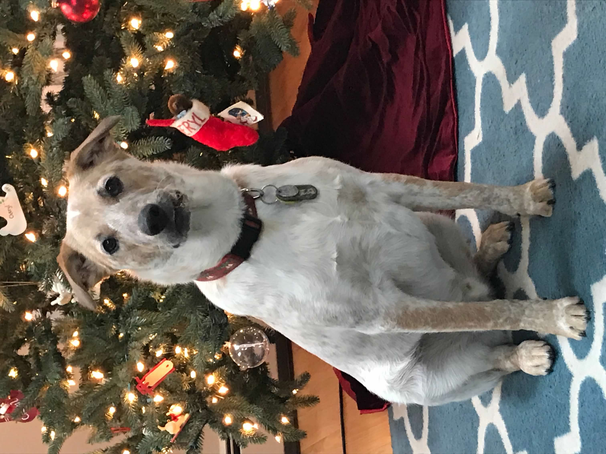

Navigation Page:
More Links:
A little About Me:
I am a current fourth-year Data Science and Health Science Student at Northeastern Uniersity! As a DS/HS student I hope to get more into using technology to help combat infectious disease across the world and work towards effective treatments/vaccinations. Some possible passion projects/skills I want to learn more about is a little bit of graphic design including things like figma. Other than school, I enjoy reading new books, finding new cozy games, and running/going to the gym! I've lived in Massachusetts my whole life! I grew up knowing I wanted to go into healthcare and even entered college as pre-med until I took my first coding class where I learned biostatistics in R programming language. I then switched my major to a combined major and am now a Health Science and Data Science student. The combination of Data Science and Health Science will hopefully allow me to help thousands across the world and be an innovator in the combination of technology and medicine. I believe the cross between technology and healthcare has yet to reach its peak and believe that it can be the solution for so many current conditions. In the future I hope to work with infectious disease either globally or in the United States!
Here's a photo of my dog Kam! I got him when I was 14 and he was just 3 months old. I love bringing him on hikes.